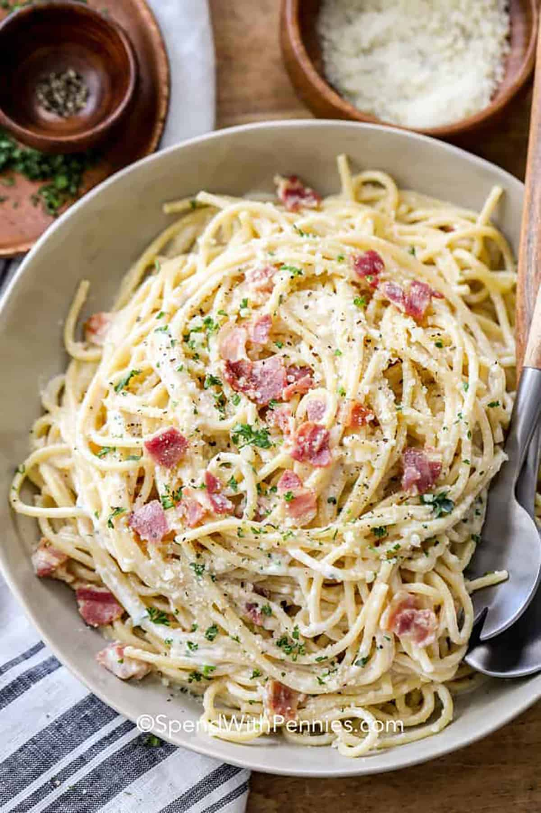

Pasta Carbonara

Description
Carbonara is a pasta dish made with eggs, hard cheese, fatty cured pork,
and black pepper. The dish took its modern form and name in the middle of the 20th century.
The cheese is usually pecorino romano. Some variations use Parmesan,
Grana Padano, or a combination of cheeses.
Ingredients
- 100g pancetta.
- 50g pecorino cheese.
- 50g parmesan.
- 3 large eggs.
- 350g spaghetti.
- 2 plump garlic cloves, peeled and left whole.
- 50g unsalted butter.
- sea salt and freshly ground black pepper.
Steps
- Boil the pasta. Meanwhile, fry pancetta in oil in a frying
pan for a few mins until golden and crisp. Add garlic, fry for 1 min,
then turn off the heat. Briefly whisk egg and yolks with most of the parmesan and some seasoning.
- Drain pasta, reserving a little of the cooking water. Add eggs and a tbsp of cooking water, then mix until
pasta is coated and creamy. The heat from the pasta will gently cook the sauce. Stir in
the pancetta and garlic then serve, topped with the remaining parmesan.